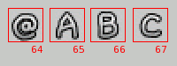
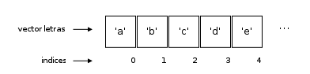
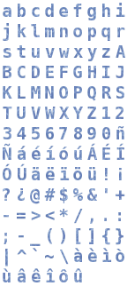
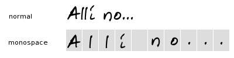
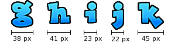

Fuentes gráficas
Créditos
- Autor: Hugo Ruscitti
- Fecha: 23 de Enero del 2006
Introducción
A la hora de programar una aplicación con SDL debemos tener en cuenta que la biblioteca principal (libSDL) no incluye rutinas para el manejo de textos. En principio puede parecernos una desventaja, pero el diseño de SDL nos permite incorporar otro tipo de bibliotecas auxiliares como SDL_TTF para cubrir esos requisitos.
En el presente artículo analizaremos otra forma de solucionar el manejo de textos, veremos como desarrollar nuestro propio sistema de fuentes gráficas (basadas en mapas de bits), contemplando la existencia de caracteres especiales como las vocales con tilde y la letra ñ.
Primer ejemplo: fuentes monospace utilizando ASCII
Comenzaremos por el método mas sencillo. Al momento de iniciar el programa debemos cargar todas las fuentes gráficas en memoria. Todos los caracteres de nuestra fuente se almacenarán en una sola imagen separada en celdas, la siguiente imágen muestra una parte de la grilla:
 Ahora bien, imagine que quisiéramos imprimir una cadena de texto en el menú principal de un videojuego: “iniciar nuevo juego”. Como nuestra fuente gráfica se encuentra organizada en una sola imagen, necesitamos conocer la posición de cada letra en la grilla al momento de imprimir, uno a uno, todos los caracteres de la cadena: 'i', 'n', 'i', 'c', 'i', 'a', 'n', 'd', 'o' …
Ahora bien, imagine que quisiéramos imprimir una cadena de texto en el menú principal de un videojuego: “iniciar nuevo juego”. Como nuestra fuente gráfica se encuentra organizada en una sola imagen, necesitamos conocer la posición de cada letra en la grilla al momento de imprimir, uno a uno, todos los caracteres de la cadena: 'i', 'n', 'i', 'c', 'i', 'a', 'n', 'd', 'o' …
Como veíamos en otro artículo, llamado Grilla de gráficos y animaciones, podremos indicarle a SDL que imprima en pantalla solo una celda de la grilla. Todas las celdas deberían tener el mismo tamaño para que nos resulte mas sencillo localizarlas mediante un índice:  Entonces, para imprimir un caracter de la cadena en pantalla solo tendríamos que conocer qué celda de la grilla representa al caracter.
{kind=link}
He visto que varios videojuegos resuelven esta asociación utilizando el valor numérico que provee la tabla de valores ASCII (ejecute man ascii para mas detalles).
En una tabla de caracteres ASCII se relacionan una serie de caracteres con una representación numérica (en base decimal, octal y hexadecimal). Como el código ASCII de cada caracter consta de 7 bits, en total encontraremos 128 caracteres, el caracter 'A' se corresponde con el número 65, 'B' con el número 66 … etc.
Estos valores numéricos se pueden obtener desde el mismo programa en lenguaje C sin mucho esfuerzo:
print ("El código ASCII de '%c' es '%d'\\n", 'A', 'A')
Como la grilla de fuentes que esperamos utilizar se encuentra ordenada en base al código ASCII será simple comenzar a imprimir, solo tendremos que:
- situar el punto destino de impresión en pantalla.
- recorrer la cadena a imprimir, y por cada caracter:
- utilizar su código ASCII para acceder a la grilla de fuentes.
- imprimir la celda en pantalla.
- avanzar el punto de impresión hacia la derecha.
A continuación se incluye el primer ejemplo: Descargar código fuente.
{kind=link}
Para desarrollar este ejemplo se han utilizado las fuentes tipográficas que incluye el videojuego libre SuperTux (http://super-tux.sf.net).
Algunos problemas del primer ejemplo ...
¿Que ocurriría si quisieramos imprimir el caracter '¿', 'ñ' o 'á'?. Al parecer, relacionar el número de caracter con su código ASCII no resultará a la hora de localizar algunos caracteres que buscamos imprimir.
El conjunto de caracteres ASCII es muy reducido, no incluye vocales con tildes, el caracter 'ñ', diéresis ('ü') y demás.
Segundo ejemplo: fuentes monospace sin utilizar ASCII
Para contemplar la existencia de caracteres no ASCII, es preciso utilizar otro método de asociación entre un caracter y su posición en la grilla.
Existen otros conjuntos de caracteres mas extensos de ASCII (como unicode), aunque aquí nos limitaremos a utilizar un simple vector de caracteres:  Cada celda del vector representará un caracter de nuestra fuente, y el índice (o posición) de cada celda lo utilizaremos como identificador (o código) de cada caracter.
{kind=link}
Como ya no nos preocuparemos por el código ASCII de ningún caracter, podremos re-definir el orden dentro de la grilla; por ejemplo, en la nueva grilla:  sabremos que el primer cuadro (índice 0) representa la letra 'a', el cuadro 45 corresponde a 'T', el cuadro 82 corresponde a '¿' …
{kind=link}
El código fuente de este ejemplo está basado en el anterior. Para que funcione la nueva relación de caracteres se realizaron algunos cambios, el mas importante es la creación de la función:
Código fuente: fuente_sol_2.c 
[...] int obtener_indice (char caracter) { int i; static char letras [] = "abcdefghijklmnopqrstuvwxyz"\ "ABCDEFGHIJKLMNOPQRSTUVWXYZ" \ "1234567890" \ "ñÑáéíóúÁÉÍÓÚäëïöü"\ "!¡?¿@#$%&'+-=><*/,.:;-_()[]{}|^`~\\"\ "àèìòùâêîôû "; for (i = 0; letras [i]; i ++) { if (caracter == letras [i]) { return i; } } printf ("No se puede encontrar el índice de '%c'\n", caracter); return -1; } [...]
La función obtener_indice informa cual es el cuadro de la grilla gráfica que contiene al caracter dado por el parámetro.
Note que dicha función nos resuelve las relaciones que antes dependían del código ASCII de cada caracter, ahora con solo llamar a obtener_indice ('¿') obtenemos el número de cuadro que debemos conocer para imprimir el caracter en pantalla (82, en este caso):
int indice; indice = obtener_indice ('a'); imprimir_celda (indice, ima_fuentes, screen); SDL_Flip (screen);");
A continuación, el segundo ejemplo: Descargar código fuente.
{kind=link}
Algunos problemas del segundo ejemplo ...
Habrá notado que en los títulos del artículo se utiliza la palabra monospace, con ello se resume que todas las letras de nuestra fuente tienen el mismo tamaño. Esto no suele ser un problema, si se elige correctamente la decoración de tipografía es probable que el usuario no perciba este detalle.
Lamentablemente para nosotros, por lo general se busca implementar un sistema de fuentes gráficas cuando se quiere utilizar fuentes decorativas que ofrezcan ambientación a cada escena: Letras irregulares, complejas y, por supuesto, de diferentes tamaños.
Si tomamos una fuente decorativa, y la utilizamos como si se tratara de una fuente monospace muchos caracteres “angostos”, como la letra 'i', quedarán demasiado separados del resto:  Por ese motivo buscaremos implementar una nueva solución, que nos permita utilizar fuentes de tamaño variable.
{kind=link}
Tercer ejemplo: fuentes variables y sin utilizar ASCII
Imprimir una fuente de tamaño variable es algo mas complejo, dado que necesitamos conocer el tamaño de cada letra y dónde se encuentra en la grilla (ahora con celdas de diferente tamaño).
Si observamos la nueva fuente, los diferentes caracteres podrían tener tamaños muy diversos, aunque por esta vez, solo nos preocuparemos por su tamaño horizontal (todas tendrán la misma altura):  En principio, existirán varias formas de gestionar el manejo de estas fuentes, aunque aquí solo analizaremos una estrategia:
{kind=link}
Antes de imprimir algún caracter en pantalla, debemos analizar la longitud horizontal de cada caracter y registrarlo en nuestro programa. Esa tarea de Análisis se realiza al momento de iniciar el programa, por lo tanto, confeccionar la fuentes será mas sencillo para nuestro artista, puede despreocuparse de las viejas celdas por el momento. En el programa de ejemplo dicha tarea se realiza mediante un llamado a la función identificar_rects, enviando como parámetros la imagen que contiene las fuentes y un vector de rectángulos:
SDL_Surface * ima; SDL_Rect fuentes [150]; identificar_rects (ima, fuentes);
Luego de llamar a la función, el vector fuentes almacenará en cada una de sus celdas el tamaño de una letra. Cada celda utiliza una estructura de datos (Rectángulo) que nos provee la biblioteca SDL:
typedef struct { Sint16 x, y; Uint16 w, h; } SDL_Rect;
Todos los tamaños de fuente se almacenarán en órden, la primer letra encontrada será guardada en la posición 0 del vector, la siguiente en la posición 1. Por lo tanto necesitaremos nuevamente de un vector de caracteres que nos relacione el un número de índice con el caracter que representa. Utilizaremos para ello la función obtener_indice del ejemplo 2.
Una vez analizada la fuente se podrá comenzar a imprimir caracteres con la función imprimir_palabra:
imprimir_palabra (screen, ima, fuentes, 5, 5, \"¡ Hola mundo !\");
Para que la función pueda imprimir una cadena completa debe realizar algunas tareas mas específicas, por ejemplo, para imprimir un caracter el procedimiento es:
- buscar su índice numérico (idéntico al ejemplo 2).
- con el índice se accede al vector de rectángulos que define el tamaño y posición del caracter.
- se utiliza el rectángulo para imprimir el caracter.
Así quedará nuestro tercer ejemplo: Descargar código fuente
{kind=link}
En este ejemplo utilicé la fuente tipográfica Lockergnome de Ray Larabie, y luego apliqué algunos efectos simples con el programa libre El Gimp, puede utilizar la fuente y, si quiere, puede enviarme algunas fuentes más para que las pueda añadir a esta página.
Acerca de printf
Si utiliza el lenguaje de programación C seguramente sabrá que una de las funciones mas utilizadas es printf, incluso el primer ejemplo de todo libro de programación suele ser el clásico “Hola mundo !”:
#include <stdio.h> int main (void) { printf ("Hello World !"); return 0; }
printf es una función muy versátil, ya que además cuenta con parámetros variables y gestiona cadenas con formato:
int num = 20; int letra = 'a'; printf ("El número %d es entero, y %c es un caracter\n", num, letra);
Si quisieramos desarrollar una función como printf e integrarla a nuestro ejemplo de fuentes, tendríamos que generar una nueva función:
void mi_printf (SDL_Surface * screen, SDL_Surface * ima, SDL_Rect * fuentes, int x, int y, char * formato, ...) { va_list lista; char buffer [1024]; va_start (lista, formato); vsprintf (buffer, formato, lista); imprimir_palabra (screen, ima, fuentes, x, y, buffer); va_end (lista); }
Note que declaramos una función con argumentos variables, de ahí los tres puntos (…) a continuación de char * formato.
La estructura va_list nos permite gestionar una lista de argumentos variables, para lo cual necesitaremos llamar a va_start indicándole el último argumento conocido antes de los argumentos variables (en este caso el último argumento es char * formato).
La función vsprintf realizará el trabajo de interpretar una cadena de formatos, por ejemplo “número: %d”, y colocar el resultado en el primer argumento buffer. Esta función es similar a printf, pero en lugar de imprimir el resultado en pantalla lo almacena en una cadena de caracteres.
Los argumentos variables se pueden procesar mediante una serie de macros como va_start, va_arg y va_end, definidas en la cabecera stdarg.h. Puede consultar las páginas de manual ejecutando man va_start y man printf en su sistema GNU/Linux para mas detalles.
Pruebe añadir la nueva función al código del ejemplo 3 e intente llamar a:
int vidas = 3; mi_printf (screen, ima, fuentes, 10, 10, "vidas: %d", 3);
Conclusiones
Si bien existen bibliotecas como SDL_TTF que nos facilitan el manejo de fuentes, cuando implementamos nuestro propio sistema de fuentes aprendemos algo más acerca del manejo de cadenas y superficies.
De todas manetras, muchos de los problemas que analizamos aquí se le presentarán aunque utilice SDL_TTF o similares. Recuerde que aún no resolvemos los saltos de línea, un reemplazo para scanf, métodos de alineación (centrado, derecha, izquierda …) y demás. Estas rutinas quedarán pendientes para usted, puede que su videojuego las necesite.
Licencia
Se permite la copia, modificación y distribución de este artículo sólo bajo los términos de la Licencia Creative Commons. Los programas de ejemplo se distribuyen bajo la licencia GPL.